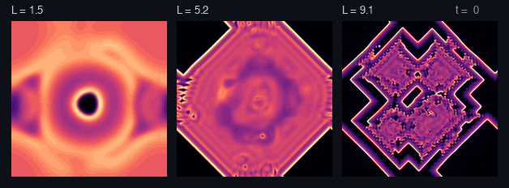
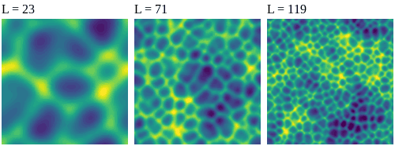
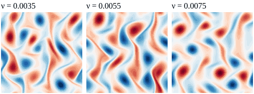
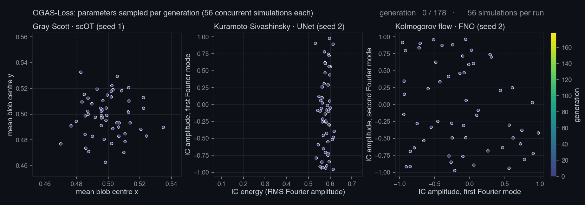
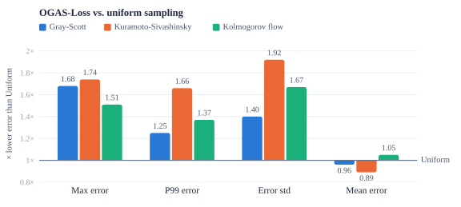
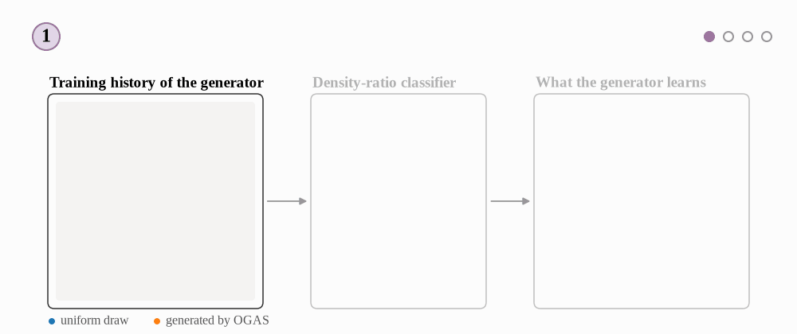

Learning Where to Simulate
Generative Active Sampling for Online PDE Surrogate Training
Where the difficulty comes from
A simulation is defined by a physical coefficient and a parametrized initial condition. The coefficient alone changes the dynamics qualitatively, so a uniform draw spends much of the budget where the surrogate is already accurate. Each row below shows one PDE at a low, a middle and a high value.
Gray-Scott · domain size

Kuramoto-Sivashinsky · domain size

Kolmogorov flow · viscosity

What OGAS samples
Each simulation receives a difficulty score during training: the normalized training loss (OGAS-Loss) or the disagreement of an ensemble of two surrogates (OGAS-Uncertainty). A conditional DDPM learns from the recent (parameters, score) pairs and generates parameters for high target difficulties. Their share grows to 70 %; the rest stays uniform.

Results
OGAS is compared with uniform and Sobol sampling, pool-based active learning (SBAL, Top-K) and an online Gaussian-mixture sampler (Breed), all at the same simulation budget and the same number of gradient steps.
| Error ratio to Uniform | Max | P99 | Std | Mean |
|---|---|---|---|---|
| OGAS-Loss | 1.64 | 1.42 | 1.66 | 0.97 |
| OGAS-Uncertainty | 1.47 | 1.32 | 1.50 | 0.96 |
| Breed | 1.17 | 1.23 | 1.42 | 0.92 |
Above 1 means a lower error than Uniform. One-step normalized RMSE on 750 held-out trajectories, averaged over the nine PDE–architecture pairs.
The gain is concentrated in the tail: the worst errors and their spread shrink, at a small cost on the mean error, which a uniformly drawn validation set weighs towards easy regimes. SBAL, Top-K and Sobol give smaller or inconsistent gains.

A thinner tail, not a shifted bulk
On 1D problems, where many more runs are affordable, the full error distributions show the mechanism: OGAS and Uniform overlap on the bulk of the validation set, while the upper tail of OGAS drops by orders of magnitude in density.
Debiasing the sampler
The DDPM learns from simulations it chose itself, so its training history over-represents the regions it already favored. A classifier estimates how much denser the history is than a uniform draw, and the DDPM's training examples are weighted by the inverse ratio.

Cost and limitations
OGAS runs asynchronously on its own GPU and works only in parameter space, so its cost does not grow with the field resolution. Sending the training signals adds about 23 s to a run (0.2 % of its wall time), whereas pool-based methods pause simulation and training to score their candidates.
- The mean error is slightly higher than with uniform sampling in several settings, mostly for the smaller UNet and FNO on Kuramoto-Sivashinsky and Gray-Scott.
- OGAS used one extra GPU; sharing the surrogate's GPU is possible but was not evaluated at a fixed compute budget.
- 2D results use three seeds per setting, and there is no theory yet for online active learning of nonlinear surrogates.
BibTeX
@inproceedings{cesar2026learning,
title = {Learning Where to Simulate: Generative Active Sampling
for Online {PDE} Surrogate Training},
author = {Cesar, Pierre and Dymchenko, Sofya and Purandare, Abhishek
and Raffin, Bruno},
booktitle = {Advances in Neural Information Processing Systems (NeurIPS)},
year = {2026}
}